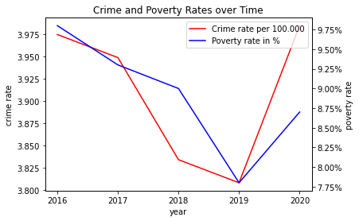

import plotly.graph_objs as go
import plotly.express as px
import pandas as pd
df = pd.read_csv('dataset2.csv')
df.head()
---------------------------------------------------------------------------
FileNotFoundError Traceback (most recent call last)
Cell In[2], line 1
----> 1 df = pd.read_csv('dataset2.csv')
3 df.head()
File ~\miniconda3\lib\site-packages\pandas\io\parsers\readers.py:912, in read_csv(filepath_or_buffer, sep, delimiter, header, names, index_col, usecols, dtype, engine, converters, true_values, false_values, skipinitialspace, skiprows, skipfooter, nrows, na_values, keep_default_na, na_filter, verbose, skip_blank_lines, parse_dates, infer_datetime_format, keep_date_col, date_parser, date_format, dayfirst, cache_dates, iterator, chunksize, compression, thousands, decimal, lineterminator, quotechar, quoting, doublequote, escapechar, comment, encoding, encoding_errors, dialect, on_bad_lines, delim_whitespace, low_memory, memory_map, float_precision, storage_options, dtype_backend)
899 kwds_defaults = _refine_defaults_read(
900 dialect,
901 delimiter,
(...)
908 dtype_backend=dtype_backend,
909 )
910 kwds.update(kwds_defaults)
--> 912 return _read(filepath_or_buffer, kwds)
File ~\miniconda3\lib\site-packages\pandas\io\parsers\readers.py:577, in _read(filepath_or_buffer, kwds)
574 _validate_names(kwds.get("names", None))
576 # Create the parser.
--> 577 parser = TextFileReader(filepath_or_buffer, **kwds)
579 if chunksize or iterator:
580 return parser
File ~\miniconda3\lib\site-packages\pandas\io\parsers\readers.py:1407, in TextFileReader.__init__(self, f, engine, **kwds)
1404 self.options["has_index_names"] = kwds["has_index_names"]
1406 self.handles: IOHandles | None = None
-> 1407 self._engine = self._make_engine(f, self.engine)
File ~\miniconda3\lib\site-packages\pandas\io\parsers\readers.py:1661, in TextFileReader._make_engine(self, f, engine)
1659 if "b" not in mode:
1660 mode += "b"
-> 1661 self.handles = get_handle(
1662 f,
1663 mode,
1664 encoding=self.options.get("encoding", None),
1665 compression=self.options.get("compression", None),
1666 memory_map=self.options.get("memory_map", False),
1667 is_text=is_text,
1668 errors=self.options.get("encoding_errors", "strict"),
1669 storage_options=self.options.get("storage_options", None),
1670 )
1671 assert self.handles is not None
1672 f = self.handles.handle
File ~\miniconda3\lib\site-packages\pandas\io\common.py:859, in get_handle(path_or_buf, mode, encoding, compression, memory_map, is_text, errors, storage_options)
854 elif isinstance(handle, str):
855 # Check whether the filename is to be opened in binary mode.
856 # Binary mode does not support 'encoding' and 'newline'.
857 if ioargs.encoding and "b" not in ioargs.mode:
858 # Encoding
--> 859 handle = open(
860 handle,
861 ioargs.mode,
862 encoding=ioargs.encoding,
863 errors=errors,
864 newline="",
865 )
866 else:
867 # Binary mode
868 handle = open(handle, ioargs.mode)
FileNotFoundError: [Errno 2] No such file or directory: 'dataset2.csv'
df = pd.read_csv('dataset2.csv')
trace1 = go.Bar(
x=df['diploma'],
y=df['white'],
name='white',
marker=dict(color='rgb(102,194,165)')
)
trace2 = go.Bar(
x=df['diploma'],
y=df['hispanic'],
name='hispanic',
marker=dict(color='rgb(106,90,205)')
)
trace3 = go.Bar(
x=df['diploma'],
y=df['asian'],
name='asian',
marker=dict(color='rgb(141,160,203)')
)
trace4 = go.Bar(
x=df['diploma'],
y=df['black'],
name='black',
marker=dict(color='rgb(135,206,235)')
)
# Create a layout object that contains the specifications for the X and Y axes, and the legend
layout = go.Layout(
title='Education level by racial groups',
height = 400,
xaxis=go.layout.XAxis(
type='category', # the type for the x axis is categorical
title='Education Level'
),
yaxis=go.layout.YAxis(
title='Value'
),
barmode='group', # Group the bars for each category
legend=dict(
)
)
# Create the figure object with data and layout
fig = go.Figure(data=[trace1, trace2, trace3, trace4], layout=layout)
fig.show()
---------------------------------------------------------------------------
FileNotFoundError Traceback (most recent call last)
Cell In[11], line 1
----> 1 df = pd.read_csv('dataset2.csv')
3 trace1 = go.Bar(
4 x=df['diploma'],
5 y=df['white'],
(...)
8
9 )
11 trace2 = go.Bar(
12 x=df['diploma'],
13 y=df['hispanic'],
(...)
16
17 )
File c:\Users\johnn\AppData\Local\Programs\Python\Python311\Lib\site-packages\pandas\io\parsers\readers.py:912, in read_csv(filepath_or_buffer, sep, delimiter, header, names, index_col, usecols, dtype, engine, converters, true_values, false_values, skipinitialspace, skiprows, skipfooter, nrows, na_values, keep_default_na, na_filter, verbose, skip_blank_lines, parse_dates, infer_datetime_format, keep_date_col, date_parser, date_format, dayfirst, cache_dates, iterator, chunksize, compression, thousands, decimal, lineterminator, quotechar, quoting, doublequote, escapechar, comment, encoding, encoding_errors, dialect, on_bad_lines, delim_whitespace, low_memory, memory_map, float_precision, storage_options, dtype_backend)
899 kwds_defaults = _refine_defaults_read(
900 dialect,
901 delimiter,
(...)
908 dtype_backend=dtype_backend,
909 )
910 kwds.update(kwds_defaults)
--> 912 return _read(filepath_or_buffer, kwds)
File c:\Users\johnn\AppData\Local\Programs\Python\Python311\Lib\site-packages\pandas\io\parsers\readers.py:577, in _read(filepath_or_buffer, kwds)
574 _validate_names(kwds.get("names", None))
576 # Create the parser.
--> 577 parser = TextFileReader(filepath_or_buffer, **kwds)
579 if chunksize or iterator:
580 return parser
File c:\Users\johnn\AppData\Local\Programs\Python\Python311\Lib\site-packages\pandas\io\parsers\readers.py:1407, in TextFileReader.__init__(self, f, engine, **kwds)
1404 self.options["has_index_names"] = kwds["has_index_names"]
1406 self.handles: IOHandles | None = None
-> 1407 self._engine = self._make_engine(f, self.engine)
File c:\Users\johnn\AppData\Local\Programs\Python\Python311\Lib\site-packages\pandas\io\parsers\readers.py:1661, in TextFileReader._make_engine(self, f, engine)
1659 if "b" not in mode:
1660 mode += "b"
-> 1661 self.handles = get_handle(
1662 f,
1663 mode,
1664 encoding=self.options.get("encoding", None),
1665 compression=self.options.get("compression", None),
1666 memory_map=self.options.get("memory_map", False),
1667 is_text=is_text,
1668 errors=self.options.get("encoding_errors", "strict"),
1669 storage_options=self.options.get("storage_options", None),
1670 )
1671 assert self.handles is not None
1672 f = self.handles.handle
File c:\Users\johnn\AppData\Local\Programs\Python\Python311\Lib\site-packages\pandas\io\common.py:859, in get_handle(path_or_buf, mode, encoding, compression, memory_map, is_text, errors, storage_options)
854 elif isinstance(handle, str):
855 # Check whether the filename is to be opened in binary mode.
856 # Binary mode does not support 'encoding' and 'newline'.
857 if ioargs.encoding and "b" not in ioargs.mode:
858 # Encoding
--> 859 handle = open(
860 handle,
861 ioargs.mode,
862 encoding=ioargs.encoding,
863 errors=errors,
864 newline="",
865 )
866 else:
867 # Binary mode
868 handle = open(handle, ioargs.mode)
FileNotFoundError: [Errno 2] No such file or directory: 'dataset2.csv'
dh = pd.read_csv('health.csv', delimiter=',')
trace = go.Bar(
x=dh['pctile'],
y=dh['ave']
)
# Create a layout object that contains the specifications for the X and Y axes, and the legend
layout = go.Layout(
title = 'Mortality rate of income percentile',
xaxis=go.layout.XAxis(
type='category', # the type for the x axis is categorical
title = 'income percentile'
),
yaxis=go.layout.YAxis(
title = 'mortality rate'
)
)
fig = go.Figure(data=trace, layout=layout)
fig.show()
dp = pd.read_csv('crimerace.csv', delimiter=',')
aantal = dp['total']
race = dp['race']
fig = px.pie(
dp,
values = aantal,
names = race,
title = 'Violent crime rate across across racial groups'
)
fig.update_traces(
textposition='outside',
textinfo='percent+label'
)
fig.update_layout(
height = 600,
showlegend = False
)
fig.show()
df = pd.read_csv('population.csv', delimiter=',')
aantal = df['total']
race = df['race']
fig = px.pie(
dp,
values = aantal,
names = race,
title = 'Population of the US'
)
fig.update_traces(
textposition='outside',
textinfo='percent+label'
)
fig.update_layout(
height = 600,
showlegend = False
)
fig.show()
from ipywidgets import interact, Dropdown, Layout
dp = pd.read_csv('crimerace.csv', delimiter=',')
df = pd.read_csv('population.csv', delimiter=',')
def update_plot(variable):
if variable == 'crime rate':
data = dp
title = 'Violent crime rate across racial groups'
if variable == 'population':
data = df
title = 'Population of the US'
values = data['total']
names = data['race']
fig = px.pie(
data,
values=values,
names=names,
title=title
)
fig.update_traces(
textposition='outside',
textinfo='percent+label'
)
fig.update_layout(
height=600,
showlegend=False
)
fig.show()
variables = ['crime rate', 'population']
dropdown = Dropdown(options=variables, value=variables[0], description='Variable:', layout=Layout(width='300px'))
interact(update_plot, variable=dropdown)
<function __main__.update_plot(variable)>
dg = pd.read_csv('fatal.csv', delimiter=',')
trace = go.Bar(
x=dg['race'],
y=dg['freq'],
marker=dict(color=['rgb(102,194,165)', 'rgb(135,206,235)', 'rgb(106,90,205)', 'rgb(141,160,203)'])
)
# Create a layout object that contains the specifications for the X and Y axes, and the legend
layout = go.Layout(
title = 'Frequency police-involved fatalities by racial groups',
xaxis=go.layout.XAxis(
type='category', # the type for the x axis is categorical
title = 'Racial groups'
),
yaxis=go.layout.YAxis(
title = 'Frequency police-involved fatalities'
)
)
fig = go.Figure(data=trace, layout=layout)
fig.show()
import matplotlib.pyplot as plt
import matplotlib.ticker as tick
from plotly.subplots import make_subplots
df = pd.read_csv('crime_poverty.csv')
fig, ax = plt.subplots()
ax.plot(df.year,
df.crime,
color="red",
label = "Crime rate per 100.000")
ax.set_xlabel("year")
ax.set_ylabel("crime rate")
ax2=ax.twinx()
ax2.plot(df.year,
df["poverty"],
color="blue",
label = "Poverty rate in %")
ax2.set_ylabel("poverty rate")
ax2.yaxis.set_major_formatter(tick.PercentFormatter())
ax.xaxis.set_major_locator(tick.MaxNLocator(integer=True))
lines, labels = ax.get_legend_handles_labels()
lines2, labels2 = ax2.get_legend_handles_labels()
ax2.legend(lines + lines2, labels + labels2, loc="best")
ax.set_title("Crime and Poverty Rates over Time")
plt.show()
